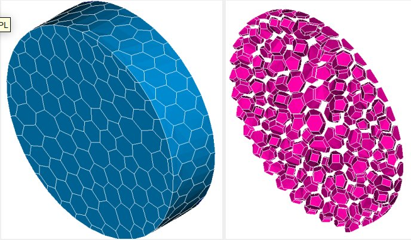
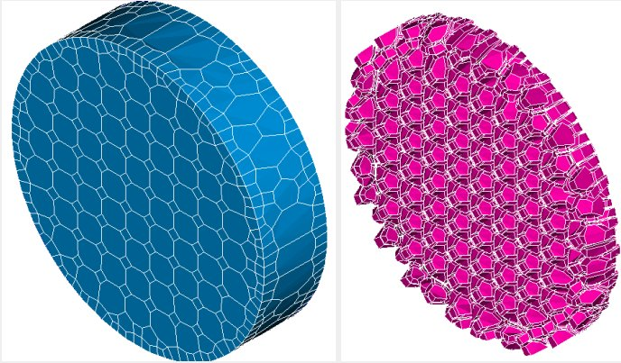
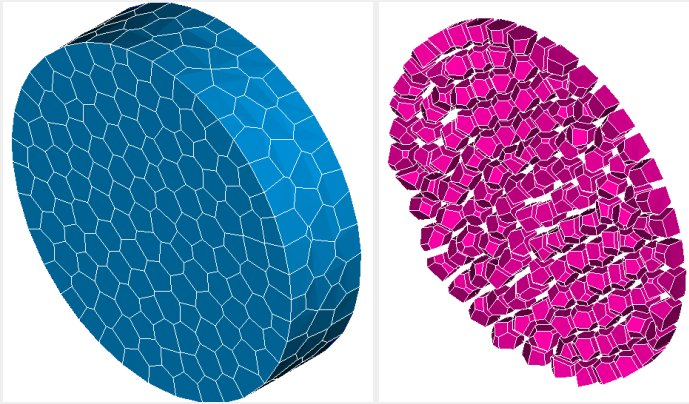

2025 – now
CEA Paris-Saclay
Software engineer, 3-year work-study · Gif-sur-Yvette
- Made polyhedral meshing usable end to end in SALOME: a C++ converter to the MED format and a single OpenFOAM export that keeps every mesh group.
- Exposed Geogram and cfMesh options in the Qt interface and made the meshing plugin run the same on Linux and Windows.
- Added a Python API, study dump and unit tests to the boolean mesh plugin, so studies can be scripted and replayed.
- Fixed lost mesh groups in the visualization module. Now integrating Code_Saturne boundary-layer insertion.



Polyhedral meshes generated in SALOME with Polydual, cfMesh and Geogram.
Apprenticeship portfolio, report and slides →